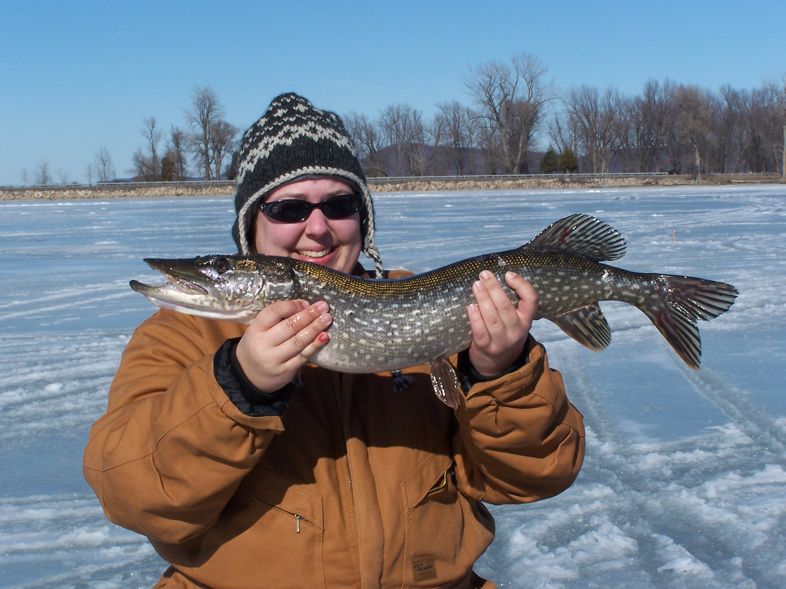
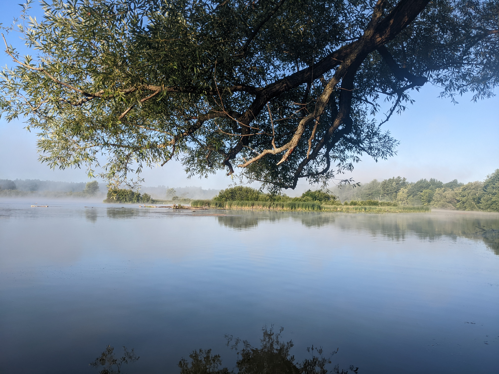

I've got a few hobbies, notably fiber arts (knitting and sewing), and fishing.
Knitting and Fiber Arts
- ravelry.com - a useful site to find knitting and crochet patterns, along with a vibrant community of fiber artists discussing what they love. I can also save projects there and keep track of the yarn and supplies that I own.
Fishing and Kayaking
 I enjoy fishing off my kayak and on the ice. During the summer I target bass or walleye, and in the winter it's all about the perch and pike. My kayak is fully kitted for fishing, and glides through the water easily.
 I particularly enjoy getting out on the water early in the morning, when the water is calm and the sun isn't as strong.
Here's my list of equipment: